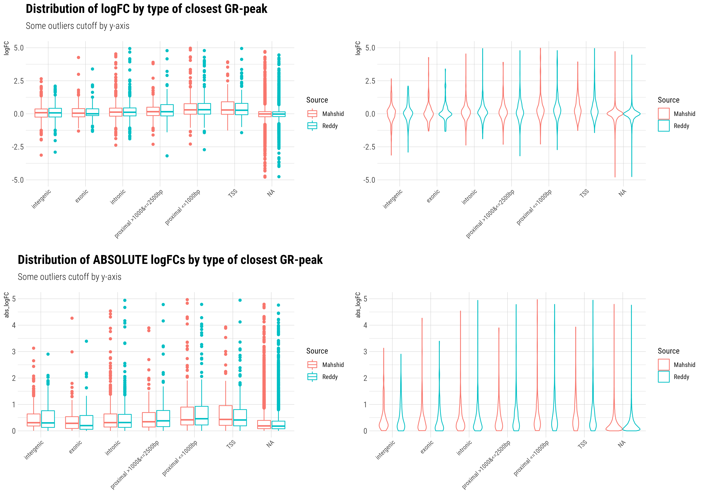
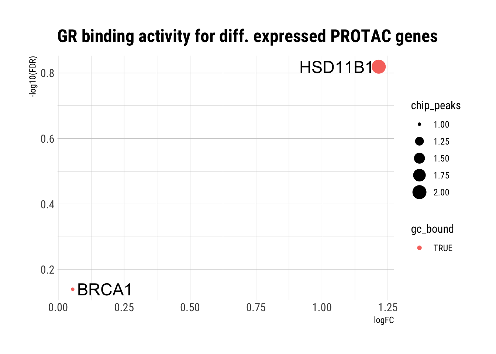
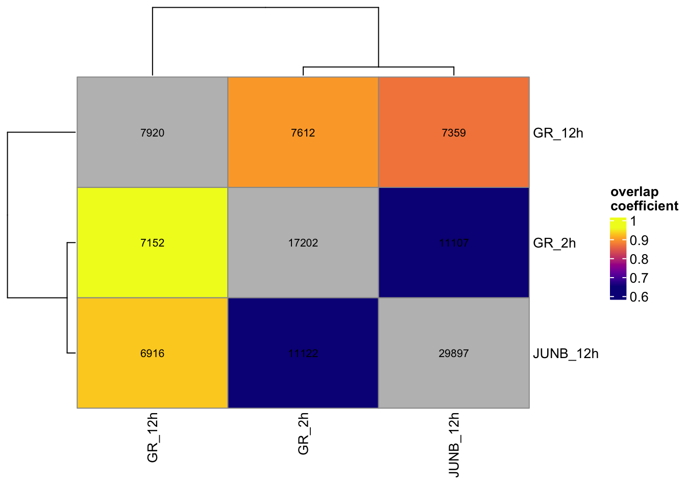
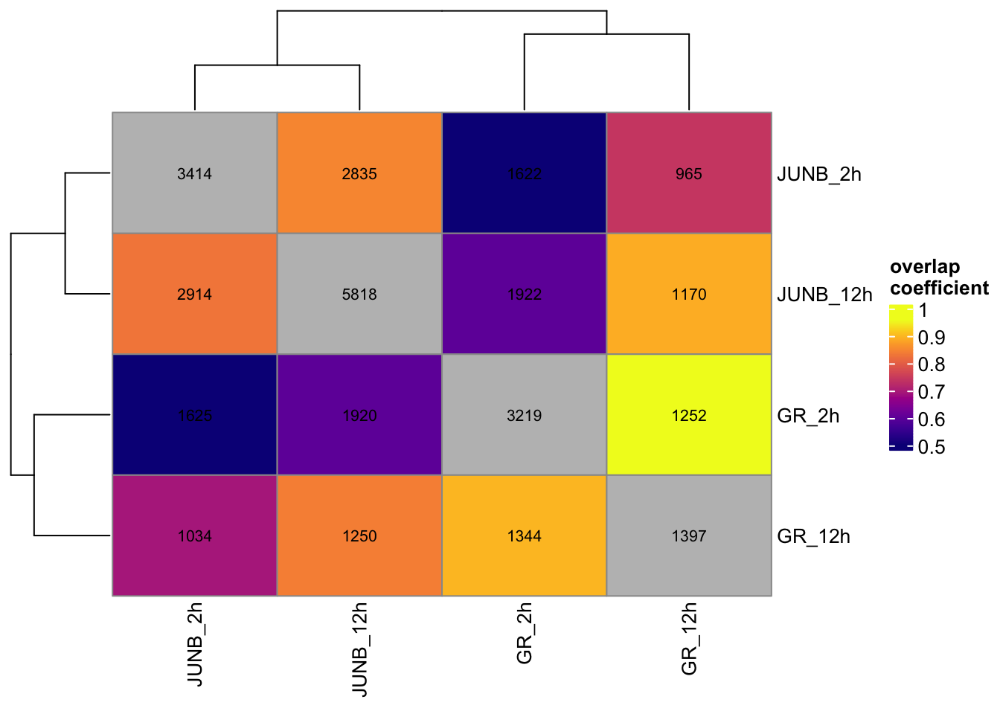
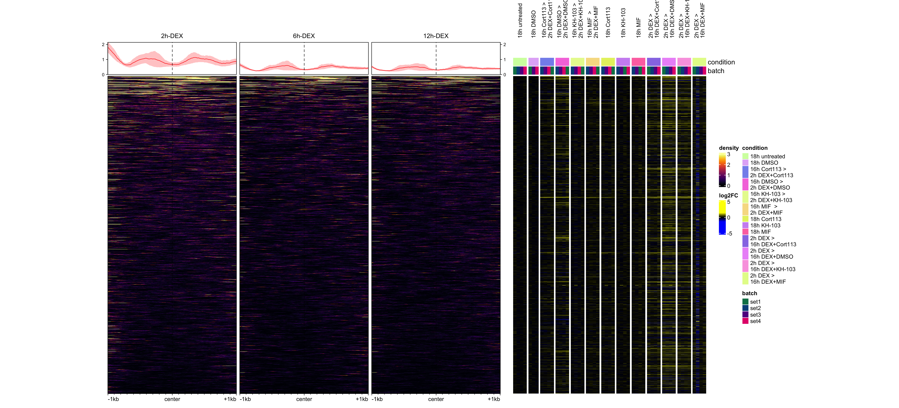
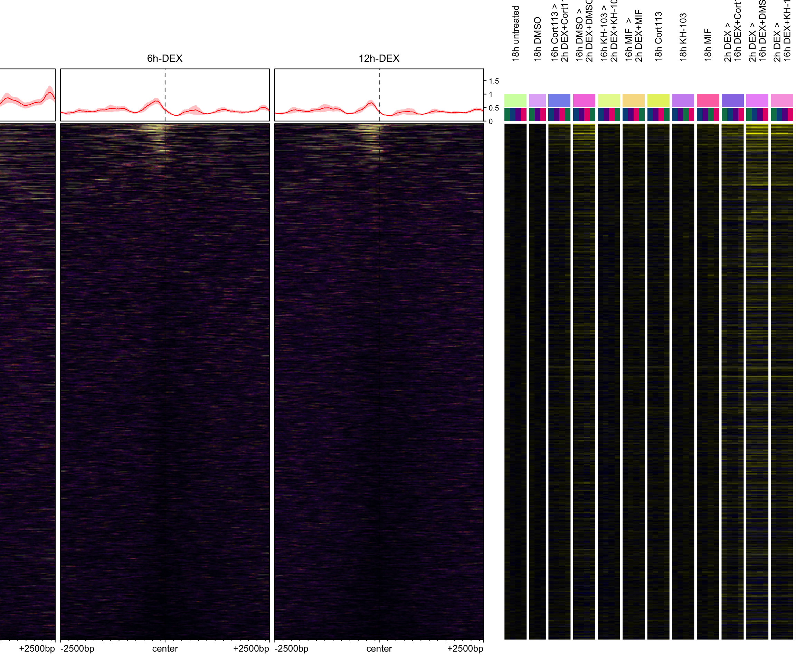
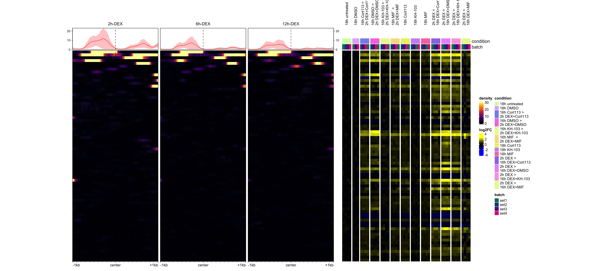
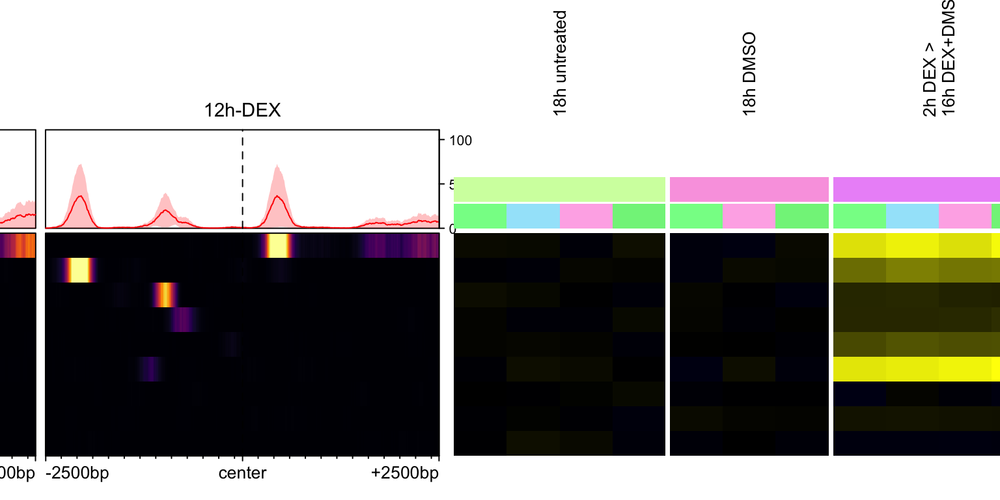
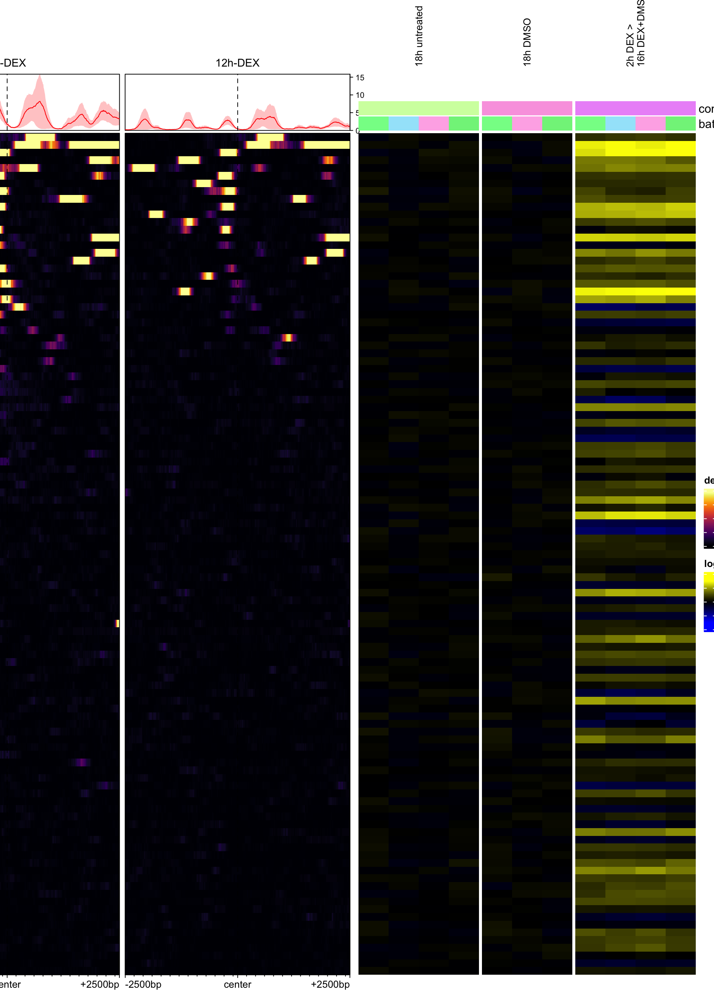

Analysis
Dominique Paul
2022-09-05
Last updated: 2022-09-05
Checks: 6 1
Knit directory: GR-PROTAC-analysis/analysis/
This reproducible R Markdown analysis was created with workflowr (version 1.7.0). The Checks tab describes the reproducibility checks that were applied when the results were created. The Past versions tab lists the development history.
The R Markdown file has unstaged changes. To know which version of the R Markdown file created these results, you’ll want to first commit it to the Git repo. If you’re still working on the analysis, you can ignore this warning. When you’re finished, you can run wflow_publish to commit the R Markdown file and build the HTML.
Great job! The global environment was empty. Objects defined in the global environment can affect the analysis in your R Markdown file in unknown ways. For reproduciblity it’s best to always run the code in an empty environment.
The command set.seed(20220515) was run prior to running the code in the R Markdown file. Setting a seed ensures that any results that rely on randomness, e.g. subsampling or permutations, are reproducible.
Great job! Recording the operating system, R version, and package versions is critical for reproducibility.
Nice! There were no cached chunks for this analysis, so you can be confident that you successfully produced the results during this run.
Great job! Using relative paths to the files within your workflowr project makes it easier to run your code on other machines.
Great! You are using Git for version control. Tracking code development and connecting the code version to the results is critical for reproducibility.
The results in this page were generated with repository version 54fa9d5. See the Past versions tab to see a history of the changes made to the R Markdown and HTML files.
Note that you need to be careful to ensure that all relevant files for the analysis have been committed to Git prior to generating the results (you can use wflow_publish or wflow_git_commit). workflowr only checks the R Markdown file, but you know if there are other scripts or data files that it depends on. Below is the status of the Git repository when the results were generated:
Ignored files:
Ignored: .DS_Store
Ignored: analysis/.DS_Store
Ignored: analysis/.Rhistory
Ignored: analysis/docs/.DS_Store
Ignored: data/.DS_Store
Ignored: data/EOS_files/
Ignored: data/Formatted_Candidate_ETG_20200305_TAD10Kb.tsv
Ignored: data/reddy_bigwig_DEX12h_r123.bigWig
Ignored: data/reddy_bigwig_DEX2h_r123.bigWig
Ignored: data/reddy_bigwig_DEX6h_r123.bigWig
Ignored: data/reddy_bigwig_JUNB_DEX12h_r123.bigWig
Ignored: data/single_replicate_peaks/.DS_Store
Ignored: data/single_replicate_peaks/control/
Ignored: data/single_replicate_peaks/dex12h/
Ignored: data/single_replicate_peaks/dex2h/
Ignored: data/single_replicate_peaks/peaks/.DS_Store
Ignored: output/.DS_Store
Untracked files:
Untracked: MR-paper.pdf
Untracked: data/reddy_bed_JUNB_DEX2h_r23.bed.gz
Unstaged changes:
Modified: analysis/01_Results.Rmd
Modified: analysis/Q2-TF-Binding-to-DE-genes.Rmd
Modified: analysis/Q3-PROTAC-reversal.Rmd
Modified: analysis/Q4-GR-binding-PROTAC-genes.Rmd
Modified: analysis/Q9-Differential_binding.Rmd
Modified: analysis/admin.Rmd
Modified: data/results/differential_binding_results.rds
Note that any generated files, e.g. HTML, png, CSS, etc., are not included in this status report because it is ok for generated content to have uncommitted changes.
These are the previous versions of the repository in which changes were made to the R Markdown (analysis/01_Results.Rmd) and HTML (docs/01_Results.html) files. If you’ve configured a remote Git repository (see ?wflow_git_remote), click on the hyperlinks in the table below to view the files as they were in that past version.
| File | Version | Author | Date | Message |
|---|---|---|---|---|
| Rmd | 54fa9d5 | dominique-paul-uzh | 2022-07-09 | final changes for submission in main files |
| html | 54fa9d5 | dominique-paul-uzh | 2022-07-09 | final changes for submission in main files |
| Rmd | 4a4e1e6 | dominique-paul-uzh | 2022-07-09 | final changes for submission in main files |
| html | 4a4e1e6 | dominique-paul-uzh | 2022-07-09 | final changes for submission in main files |
Overview
The overall goal is to (1)understand the effect of activated glucocorticoid receptors on gene regulation and (2) relate the epigenetic data from the Reddy lab with our expression data. To this end Mahshid and developed seven initial questions which define the primary scope of the analysis. In a discussion on these results further questions arised which are answered further below. As some of these questions/answers relate to results obtained in other work by Katharina, Mahshid and Pierre-Luc the flow of questions may not be fully coherent in themselves.
Question 1: Similarity of our RNA data with the Reddy data
Q: Which gene expressions have similar patterns of up-regulation (control vs. Dex) in our data compared to the Reddy data?
In our experiments we compared samples from a control experiment with samples that were treated for 18 hours with DEX. Besides a control, the Reddy lab performed a similar experiment where they treated cells with DEX for 12 hours. This is the closest comparison to our data.
As a first step we hence want to understand whether the results are similar/comparable.
Comparison via Venn diagram
q1_data <- readRDS(file="../data/EOS_files/Q1_EOS.rds")
n_genes_plot <- dim(q1_data[["logFC_plot_data"]])[1]
n_genes_union <- length(q1_data[["union_DE_genes"]])We first inspect a Venn diagram to understand the overlap of differentially expressed genes from both datasets. We see that a large part of the genes do overlap, while there are also many genes that are specific to the respective analyses. However, this is only a binary comparison and so a we next take a look at how the exact log-fold changes compare.

Comparison via log-fold changes
Second, we compare the log fold changes for the union of all genes identified as significantly differentially expressed. The union of all DE genes counts 8121 genes of which 7342 genes (90.41%) were also in the intersection of both datasets and could be plotted.
We see that the results of our differential expression (DE) analysis from the 18 DEX treatment compare well with the 12h DEX treatment DE results of the Reddy lab.

Question 2: Binding of GR-GC complex to DE genes from our analysis
Q: For the genes that our RNA-seq data shows to be DE after treatment with DEX as well as the inhibitors and control: do we see any direct TF binding to these sites? For which of these is there a difference compared to the control ChIP-seq experiment?
Take-away: Genes which are differentially expressed at a significant level are associated with GR peaks close to them. Genes with GR binding close to them are also associated with lower p-values in the DE analysis. A higher number of GR peaks close to the TSS of a gene is associated with a higher absolute log-fold change in gene expression. Genes where GR binds close to or directly at the TSS are associated with the higher absolute log-fold changes.
A table with the DE results from our 18h DEX treatment which is augmented by information on peaks identified nearby can be found in the downloads section.
An analysis on peaks which are known to interact with distant genes (long-range interactions) can be found further below in this file.
Distribution of logFC and p.value
What does this plot show?
We select all genes that are differentially expressed - both for Mahshid’s data and for the DE analysis on the Reddy data. We then split the data into two groups based on whether the Reddy data showed that the glucocorticoid receptor was found to bind near the gene or not. We plot the distributions of (a) the log fold changes in the DE analysis and (b) the p-value of the DE analysis.

Boxplots by GR peaks number

Boxplots by type of closest GR peak
Note: NA means that there was no peak for which the gene’s TSS was the TSS closest to the peak.

logFC vs. distance to closest peak

Question 3: Inhibition unique to protac compared to Cort and MIF
Q: Are there any genes that treated by the Protac before/after DEX that could be reversed but which could not by the inhibitors or vice versa?
We have performed experiments where we first exposed cells to either (1) DEX (2) inhibitors or (3) KH PROTAC for a substantial time and then added inhibitors or the KH PROTAC in case (1) or DEX in cases (2) and (3). We would like to see which genes are normally activated by DEX but where the effect could be blocked by the PROTAC, but NOT the inhibitors.
The plot for the 2h>16h treatment has been split into (1) genes with a positive log-fold change and (2) genes with a negative log-fold change to prevent the plots from becoming even more crowded.
A file with the list of genes can be found in the downloads section.
2h > 16h

16h > 2h (logFC > 0)

16h > 2h (logFC < 0)

Question 4: Does the GR bind close to any of the 13 DE genes from the 18h KH-PROTAC treatment?
Cells that were exposed to KH-103 for 18h showed 13 genes to be differentially expressed at an <0.05 FDR level. We want to understand whether GR binds close to these genes in a case where such cells are treated with DEX.
The Reddy lab has collected data on where the glucocorticoid receptor (NR3C1) binds to after treatment with dexamethasone for 12h.
Take-away: We find that the GR is found to bind close to five out of the 13 differentially expressed genes from our experiment. Interestingly, we also observe that some GR peaks are stronger after 2 hours of DEX treatment than 12 hours of continuous DEX treatment.
Table view
kh.protac <- read.xlsx("../docs/downloads/Q4_KH_DE_GR_bound.xlsx")
# only keep the significant genes
kh.protac.sig <- kh.protac[kh.protac$FDR<0.05,]
kh.protac.sig[,c("Gene", "logFC", "FDR", "chip_peaks", "gc_bound")] %>%
kableExtra::kable() %>%
kableExtra::kable_styling()| Gene | logFC | FDR | chip_peaks | gc_bound |
|---|---|---|---|---|
| PER1 | 1.1428657 | 0.0000000 | 3 | TRUE |
| TGFBR1 | 0.5510412 | 0.0000000 | 1 | TRUE |
| FKBP5 | 0.7301845 | 0.0000000 | 7 | TRUE |
| NBEAL2 | 0.3850139 | 0.0001572 | 0 | FALSE |
| CAVIN2 | 0.3182665 | 0.0006525 | 1 | TRUE |
| SLC38A2 | 0.2546515 | 0.0007788 | 0 | FALSE |
| TEF | -0.9140413 | 0.0010003 | 0 | FALSE |
| CRY1 | -0.3858283 | 0.0021419 | 0 | FALSE |
| C5AR2 | 0.6589461 | 0.0039443 | 0 | FALSE |
| ANGPTL4 | 0.4185862 | 0.0064158 | 3 | TRUE |
| CRY2 | -0.4867045 | 0.0097262 | 0 | FALSE |
| CHML | 0.2746874 | 0.0135275 | 0 | FALSE |
| PER3 | -0.7575232 | 0.0398908 | 0 | FALSE |
 ## p-value vs. logFC
## p-value vs. logFC
Signal tracks for peaks that could be matched with the 13 genes
We plot peaks for which the closest TSS was found to be one of the 13 genes. The tracks of the peaks shown are centered at these peaks and not at the TSS of the respective gene.

Tracks around the all TSSs of the 13 genes
Here we first obtain all known transcripts of the 13 genes and plot the signals centered around the respective TSS sites. As a gene can have multiple TSSs this plot is a bit crowded.

Tracks around main TSS for each of the 13 genes
To simplify the previous plot (all TSSs) we just choose a single TSS per gene (the first one in the list) and plot the signal around this TSS.

Question 5: Binding to selected genes
Q: Does GR bind to BRCA1, Hsd11b1 and CH25H?
These are specific genes requested to be examined by Mahshid. The background of the biological question is not known to me.
Take-away: We see that there is one peak in the ChIP data close to the BRCA1 gene and two peaks close to the HSD11B1 gene. There is no peak that is closest to the CH25H gene. However, the CD25H was also not found in the RNA seq data.
res_int <- read.xlsx("../docs/downloads/Q2_GR_bound_DE_genes.xlsx")
plt_data <- res_int[res_int$Gene %in% c("BRCA1", "HSD11B1", "CH25H"),c("Gene", "logFC", "FDR", "chip_peaks", "gc_bound")]
plt_data %>%
ggplot() +
geom_point(aes(logFC, -log10(FDR), colour=gc_bound, size=chip_peaks)) +
labs(title="GR binding activity for diff. expressed PROTAC genes") +
ggrepel::geom_text_repel(data=plt_data, aes(logFC, -log10(FDR), label=Gene, size=2)) +
theme_ipsum_rc()
| Version | Author | Date |
|---|---|---|
| 4a4e1e6 | dominique-paul-uzh | 2022-07-09 |
CH25H was not found. Is it in the RNA-seq experiment?
se <- readRDS("../data/EOS_files/Q1_SummExp.rds")
"ENSG00000138135" %in% rowData(se)$gene_id[1] FALSENo, it is not in the RNA-seq experiment.
We also check whether the gene is present in the table with the peaks. If the gene were to be missing in our DE data then a given peak would not show up in the results above, as it could not have been merged onto the DE results.
We search for the closest match to be sure that its not due to capitalisation or a small typo
# We also have to check the other way around by looking at all the peaks.
# If it was in the peaks then it could not be merged onto the RNA data
peakfreq <- readRDS(file="../data/EOS_files/Q2_gene_peaks.rds")
peakfreq <- peakfreq[2:dim(peakfreq)[1],] # first entry is empty
# we search for the closest match to be sure that its not due to capitalisation or a small typo
peakfreq$Gene[amatch("CH25H", peakfreq$Gene, maxDist = Inf)][1] C5
2939 Levels: AACS AADAC AADACL2-AS1 AADACP1 ABCA1 ABCA4 ABCA5 ABCC1 ... ZYG11BResult: there is no match for CH25h
Lastly, we show the information we have for the two genes found in the data:
plt_data %>%
kableExtra::kable() %>%
kableExtra::kable_styling()| Gene | logFC | FDR | chip_peaks | gc_bound | |
|---|---|---|---|---|---|
| 118 | HSD11B1 | 6.0333836 | 0 | 2 | TRUE |
| 210 | BRCA1 | -0.9559991 | 0 | 1 | TRUE |
Question 6: Common binding sites of JUNB and GR
Q: What are common binding sites between JUNB and GR? -> Generally not a priority though
Take-aways:
- Interestingly there are more peaks after 2h treatment with DEX than 12h of treatment with DEX
- Most of the 12h GR peaks are shared with the JUNB peaks, only a small fraction is unique to the 12h GR ChIP seq data
- The 2h GR data has more peaks that are unique and not shared with the 12h GR or 12h JUNB data
Unfiltered
# Load GR
peaks_gr_12h <- import.bed15("../data/reddy_bed_DEX12h_r123.bed", format="narrowPeak")
peaks_gr_2h <- import.bed15("../data/reddy_bed_DEX2h_r123.bed.gz", format="narrowPeak")
# load JUNB
peaks_junb_2h <- import.bed15("../data/reddy_bed_JUNB_DEX2h_r23.bed.gz", format="narrowPeak")
peaks_junb_12h <- import.bed15("../data/reddy_bed_JUNB_DEX12h_r123.bed", format="narrowPeak")
# Show tile diagram
list_of_regions <- list(GR_2h=peaks_gr_2h, GR_12h=peaks_gr_12h, JUNB_12h=peaks_junb_12h) # Does not work with only
cat("\n\n### Overlap \n\n")Overlap
regionOverlaps(list_of_regions)
| Version | Author | Date |
|---|---|---|
| 4a4e1e6 | dominique-paul-uzh | 2022-07-09 |
# Show upset plot
cat("\n\n### Upset plot \n\n")
What if we filter the peaks by their score?
Take-away: There is no significant change in the results/plots if we filter for a minimum peak score of 900 (max value is 1000).
# Does it make a difference if we only choose peaks with high scores?
## What is the range of scores
# qplot(peaks_gr_2h$score, geom="histogram")
# Show tile diagram
list_of_regions_v2 <- list(GR_2h=peaks_gr_2h[peaks_gr_2h$score>900],
GR_12h=peaks_gr_12h[peaks_gr_12h$score>900],
JUNB_12h=peaks_junb_12h[peaks_junb_12h$score>900]) # Does not work with only two
cat("\n\n### Overlap \n\n")Overlap
regionOverlaps(list_of_regions_v2)
| Version | Author | Date |
|---|---|---|
| 4a4e1e6 | dominique-paul-uzh | 2022-07-09 |
# Show upset plot
cat("\n\n### Upset plot \n\n")Upset plot
regionUpset(list_of_regions_v2)
| Version | Author | Date |
|---|---|---|
| 4a4e1e6 | dominique-paul-uzh | 2022-07-09 |
Which genes have a GR peak AND a JUNB peak within 2500bp distance to the TSS?
Annotate GR 2h and 12h and JUNB 2h
library(AnnotationHub)Warning: package 'AnnotationHub' was built under R version 4.1.2Loading required package: BiocFileCacheWarning: package 'BiocFileCache' was built under R version 4.1.2Loading required package: dbplyrWarning: package 'dbplyr' was built under R version 4.1.2
Attaching package: 'dbplyr'The following objects are masked from 'package:dplyr':
ident, sql
Attaching package: 'AnnotationHub'The following object is masked from 'package:rtracklayer':
hubUrlThe following object is masked from 'package:Biobase':
cacheah <- AnnotationHub()snapshotDate(): 2021-10-20ensdb <- ah[["AH98047"]] # AH89211loading from cacherequire("ensembldb")Warning: package 'GenomicFeatures' was built under R version 4.1.2Warning: package 'AnnotationDbi' was built under R version 4.1.2Warning: package 'AnnotationFilter' was built under R version 4.1.1gr_peaks_annotated_2h <- annotateRegions(peaks_gr_2h, ensdb)Warning in (function (seqlevels, genome, new_style) : cannot switch some of
GRCh38's seqlevels from NCBI to UCSC stylegr_peaks_annotated_12h <- readRDS("../data/EOS_files/Q2_annotated_peaks.rds")
JUNB_peaks_annotated_2h <- annotateRegions(peaks_junb_2h, ensdb)Warning in (function (seqlevels, genome, new_style) : cannot switch some of
GRCh38's seqlevels from NCBI to UCSC styleJUNB_peaks_annotated_12h <- annotateRegions(peaks_junb_12h, ensdb)Warning in (function (seqlevels, genome, new_style) : cannot switch some of
GRCh38's seqlevels from NCBI to UCSC style### filter for 2500 bp distance to gene TSS
# GR 2h
gr_peaks_annotated_2h$nearestTSS.gene_name.2500r <- gr_peaks_annotated_2h$nearestTSS.gene_name
gr_peaks_annotated_2h[abs(gr_peaks_annotated_2h$distance2nearestTSS) >= 2500, ]$nearestTSS.gene_name.2500r <- ""
# JUNB 2h
JUNB_peaks_annotated_2h$nearestTSS.gene_name.2500r <- JUNB_peaks_annotated_2h$nearestTSS.gene_name
JUNB_peaks_annotated_2h[abs(JUNB_peaks_annotated_2h$distance2nearestTSS) >= 2500, ]$nearestTSS.gene_name.2500r <- ""
# JUNB 12h
JUNB_peaks_annotated_12h$nearestTSS.gene_name.2500r <- JUNB_peaks_annotated_12h$nearestTSS.gene_name
JUNB_peaks_annotated_12h[abs(JUNB_peaks_annotated_12h$distance2nearestTSS) >= 2500, ]$nearestTSS.gene_name.2500r <- ""
# subset
gr_2h_subset <- gr_peaks_annotated_2h[gr_peaks_annotated_2h$nearestTSS.gene_name.2500r != "",]
gr_12h_subset <- gr_peaks_annotated_12h[gr_peaks_annotated_12h$nearestTSS.gene_name.2500r != "",]
junb_2h_subset <- JUNB_peaks_annotated_2h[JUNB_peaks_annotated_2h$nearestTSS.gene_name.2500r != "",]
junb_12h_subset <- JUNB_peaks_annotated_12h[JUNB_peaks_annotated_12h$nearestTSS.gene_name.2500r != "",]
list_of_regions_v3 <- list(GR_2h=gr_2h_subset,
GR_12h=gr_12h_subset,
JUNB_2h=junb_2h_subset,
JUNB_12h=junb_12h_subset)
cat("\n\n### Overlap \n\n")Overlap
regionOverlaps(list_of_regions_v3)
| Version | Author | Date |
|---|---|---|
| fd8956d | dominique-paul-uzh | 2022-09-05 |
# Show upset plot
cat("\n\n### Upset plot \n\n")Upset plot
regionUpset(list_of_regions_v3)
| Version | Author | Date |
|---|---|---|
| fd8956d | dominique-paul-uzh | 2022-09-05 |
Visualise the genes that have both a JUNB and GR peak within 2500bp of their TSS
gr_junb_2h_intersection_genes <- intersect(gr_2h_subset$nearestTSS.gene_name.2500r, junb_2h_subset$nearestTSS.gene_name.2500r)
# cat(gr_junb_2h_intersection_genes)
length(gr_junb_2h_intersection_genes)[1] 1139There is an overlap of 1139 genes.
Question 7: PXR Sequences
Q: Does GC-GR bind to PXR sequences?
Other groups have observed that a GR inhibitor activates CYP genes. CYP genes are target genes of PXR TF that have PXR recognition sites. the hypothesis here is that GR might also bind to PXR sites directly or probably is regulating CYP genes via interaction with PXR TF on these genes. For example, based on our RNA-seq dex triggers many CYP genes and the inhibitors too, but protac doesn’t.
The PXR motif looks like this (from Hocomoco):

gr_peaks <- readRDS("../data/EOS_files/Q2_annotated_peaks.rds")
moi <- readRDS(file="../data/EOS_files/pxr_peaks.rds")
# cat(paste0("We have ", length(gr_peaks), " GR peaks, of which ", length(moi), " (", round(length(moi)/length(gr_peaks),4)*100, "%) contain a PXR motif"))We have 7920 GR peaks, of which 238 (3.01%) contain a PXR motif
We can also look at the signals around the PXR motifs found in the accessible chromatin (identified using the 12h ATAC seq data from the Reddy lab)

Q8: How do our signals compare to our differential expression results?
In the following we plot the signal for a subset of genes, IF these genes are associated with a peak the in the GR data for the 12h DEX ChIP data.
Signals and DE results for all genes with associated peaks
We first plot the signal tracks for all genes for the sake of completeness. We plot around the TSS of the gene, not around the centre of the peak. Reminder: The peaks are labelled with the gene name the TSS of which is closest to the peak.
# load summarised experiment
se <- readRDS(file="../data/results/SE.processed.rds")
# removes the row without name
se <- se[2:dim(se)[1]]
res_int_all <- readRDS(file="../data/results/DE_our_data.rds")dds <- readRDS("../data/results/dds.rds")
tracks <- list("2h-DEX"="../data/reddy_bigwig_DEX2h_r123.bigWig",
"6h-DEX"="../data/reddy_bigwig_DEX6h_r123.bigWig",
"12h-DEX"="../data/reddy_bigwig_DEX12h_r123.bigWig")
plot_signals_and_sechm <- function(peaks, genes_subset=NULL, plot_around_gene_tss=FALSE){
# first subset for a given selection of genes
if (is.null(genes_subset) == FALSE) {
peaks <- peaks[peaks$nearestTSS.gene_name %in% genes_subset]
if (length(peaks) == 0) return(paste0("No peaks found for the genes:", paste(genes_subset, collapse = ', ')))
}
# get rid of peaks that don't have an assigned gene that was quantified
peaks <- sort(peaks[peaks$nearestTSS.gene_name %in% row.names(se)])
# give unique names to the peaks
names(peaks) <- make.unique(peaks$nearestTSS.gene_name)
# select (and duplicate) the entries in R, and give them the names
se2 <- se[as.character(peaks$nearestTSS.gene_name),]
row.names(se2) <- names(peaks)
if (plot_around_gene_tss == TRUE){
ah <- AnnotationHub()
ensdb <- ah[["AH98047"]] # AH89211
mygenes.transcripts <- transcripts(ensdb, columns=c("tx_id", "tx_name", "tx_biotype",
"tx_support_level",
"gene_id","gene_name"))
mygenes.transcripts <- subset(mygenes.transcripts, gene_name %in% peaks$nearestTSS.gene_name)
mygenes.tss <- resize(mygenes.transcripts, width=2000, fix='start')
seqlevelsStyle(mygenes.tss) <- "UCSC"
mygenes_unique <- mygenes.tss[!duplicated(mygenes.tss$gene_name),]
# adjust the se2 genes to only show the ones for which we have the TSS
genes <- mygenes_unique$gene_name
se2 <- se[genes,]
# get the signals
signals <- signal2Matrix(tracks, mygenes_unique, w=5, extend=1000)
}
else
{
signals <- signal2Matrix(tracks, peaks, w=5, extend=500)
}
h1 <- plotEnrichedHeatmaps(signals, width=unit(8, "cm"))
set.seed(100) # for colours
h2 <- sechm::sechm(se2, genes=row.names(se2), assayName="log2FC", sortRowsOn=NULL,
cluster_rows=FALSE, width=unit(12, "cm"), top_annotation=c("condition","batch"),
gaps_at="condition", column_title_gp=gpar(fontsize=10), column_title_rot=90)
# (for this second one it's important that rows are in the input order)
h1 + h2
}
plt <- plot_signals_and_sechm(gr_peaks, plot_around_gene_tss=TRUE)snapshotDate(): 2021-10-20loading from cacheWarning in (function (seqlevels, genome, new_style) : cannot switch some of
GRCh38's seqlevels from NCBI to UCSC styleReading ../data/reddy_bigwig_DEX2h_r123.bigWigReading ../data/reddy_bigwig_DEX6h_r123.bigWigReading ../data/reddy_bigwig_DEX12h_r123.bigWigplt
Signaltracks + DE plot for Side effects of the inhibitors
In the following we show the same plots, but for smaller subsets of genes. We choose at most the 200 most significantly differentially expressed genes from a given comparison named below.
The signals are plotted around the gene TSS ± 1000bp.
se.processed <- readRDS(file="../data/results/SE.processed.rds")
cat("\n\n### Genes triggered by all inhibitors \n\n")Genes triggered by all inhibitors
# Genes triggered by all inhibitors
w <- se$condition2 %in% c("control","18h Cort113","18h KH-103","18h MIF")
dds2 <- dds[,w]
mm <- model.matrix(~se$isInhibited[w])
fit <- glmFit(dds2,mm)
res <- as.data.frame(topTags(glmLRT(fit),Inf))
rnames_all_inhibs <- head(row.names(res)[res$FDR<0.05],200)
plt_all_inhibs <- plot_signals_and_sechm(gr_peaks, genes_subset=rnames_all_inhibs, plot_around_gene_tss=TRUE)snapshotDate(): 2021-10-20loading from cacheWarning in (function (seqlevels, genome, new_style) : cannot switch some of
GRCh38's seqlevels from NCBI to UCSC styleReading ../data/reddy_bigwig_DEX2h_r123.bigWigReading ../data/reddy_bigwig_DEX6h_r123.bigWigReading ../data/reddy_bigwig_DEX12h_r123.bigWigplt_all_inhibs
| Version | Author | Date |
|---|---|---|
| fd8956d | dominique-paul-uzh | 2022-09-05 |
cat("\n\n### Genes specifically altered by KH-103 \n\n")Genes specifically altered by KH-103
## Genes specifically altered by KH-103
isKh <- se$condition[w]=="18h KH-103"
mm <- model.matrix(~isKh)
fit <- glmFit(estimateDisp(dds2,mm),mm)
res <- as.data.frame(topTags(glmLRT(fit, "isKhTRUE"),Inf))
rnames_kh103 <- row.names(res)[res$FDR<0.05]
plt_kh103 <- plot_signals_and_sechm(gr_peaks, genes_subset=rnames_kh103, plot_around_gene_tss=TRUE)
plt_kh103[1] “No peaks found for the genes:TEF, CRY2”
cat("\n\n### Genes triggered by other inhibitors and not (or less) KH-103 \n\n")Genes triggered by other inhibitors and not (or less) KH-103
## Genes triggered by other inhibitors and not (or less) KH-103
mm <- model.matrix(~se$isInhibited[w]+isKh)
fit <- glmFit(estimateDisp(dds2,mm),mm)
res <- as.data.frame(topTags(glmLRT(fit, contrast=c(0,1,-1)),Inf))
rnames_inhibs_not_kh <- head(row.names(res)[res$FDR<0.05],200)
plt_inhibs_not_kh <- plot_signals_and_sechm(gr_peaks, genes_subset=rnames_inhibs_not_kh, plot_around_gene_tss=TRUE)snapshotDate(): 2021-10-20loading from cacheWarning in (function (seqlevels, genome, new_style) : cannot switch some of
GRCh38's seqlevels from NCBI to UCSC styleReading ../data/reddy_bigwig_DEX2h_r123.bigWigReading ../data/reddy_bigwig_DEX6h_r123.bigWigReading ../data/reddy_bigwig_DEX12h_r123.bigWigplt_inhibs_not_kh
| Version | Author | Date |
|---|---|---|
| fd8956d | dominique-paul-uzh | 2022-09-05 |
Signaltracks + DE plot for inhibition effects
The signals are plotted around the gene TSS ± 1000bp.
cat("\n\n### DEX-triggered genes that are inhibited (prior) \n\n")DEX-triggered genes that are inhibited (prior)
## DEX-triggered genes that are inhibited (prior)
wPrior <- which(se$condition2 %in% c("control", "16h Cort113 > 2h DEX+Cort113", "16h DMSO > 2h DEX+DMSO",
"16h KH-103 > 2h DEX+KH-103", "16h MIF > 2h DEX+MIF"))
mm <- model.matrix(~droplevels(se$condition2[wPrior]))
fit <- glmFit(estimateDisp(dds[,wPrior],mm),mm)
res <- as.data.frame(topTags(glmLRT(fit, contrast=c(0,0,1,0,0)), Inf))
rnames_dex_triggered <- head(row.names(res)[res$FDR<0.05],200)
plt_dex_triggered <- plot_signals_and_sechm(gr_peaks, genes_subset=rnames_dex_triggered, plot_around_gene_tss=TRUE)snapshotDate(): 2021-10-20loading from cacheWarning in (function (seqlevels, genome, new_style) : cannot switch some of
GRCh38's seqlevels from NCBI to UCSC styleReading ../data/reddy_bigwig_DEX2h_r123.bigWigReading ../data/reddy_bigwig_DEX6h_r123.bigWigReading ../data/reddy_bigwig_DEX12h_r123.bigWigplt_dex_triggered
cat("\n\n### Significantly more inhibited by KH-103 than by other inhibitors \n\n")Significantly more inhibited by KH-103 than by other inhibitors
### Significantly more inhibited by KH-103 than by other inhibitors
tmp <- grepl("KH-103|control",se$condition2)[wPrior]
mm <- model.matrix(~tmp)
fit <- glmFit(estimateDisp(dds[,wPrior],mm),mm)
res <- as.data.frame(topTags(glmLRT(fit), Inf))
rnames_kh103_inhibited <- head(row.names(res)[res$FDR<0.05],200)
plt_kh103_inhibited <- plot_signals_and_sechm(gr_peaks, genes_subset=rnames_kh103_inhibited, plot_around_gene_tss=TRUE)snapshotDate(): 2021-10-20loading from cacheWarning in (function (seqlevels, genome, new_style) : cannot switch some of
GRCh38's seqlevels from NCBI to UCSC styleReading ../data/reddy_bigwig_DEX2h_r123.bigWigReading ../data/reddy_bigwig_DEX6h_r123.bigWigReading ../data/reddy_bigwig_DEX12h_r123.bigWigplt_kh103_inhibited
cat("\n\n### Significantly less inhibited by KH-103 than by other inhibitors \n\n")Significantly less inhibited by KH-103 than by other inhibitors
### Significantly less inhibited by KH-103 than by other inhibitors
tmp <- grepl("KH-103|DEX\\+DMSO",se$condition2)[wPrior]
mm <- model.matrix(~tmp)
fit <- glmFit(estimateDisp(dds[,wPrior],mm),mm)
res <- as.data.frame(topTags(glmLRT(fit), Inf))
rnames_kh103_less_inhibited <- head(row.names(res)[res$FDR<0.05],200)
plt_kh103_less_inhibited <- plot_signals_and_sechm(gr_peaks, genes_subset=rnames_kh103_less_inhibited, plot_around_gene_tss=TRUE)snapshotDate(): 2021-10-20loading from cacheWarning in (function (seqlevels, genome, new_style) : cannot switch some of
GRCh38's seqlevels from NCBI to UCSC styleReading ../data/reddy_bigwig_DEX2h_r123.bigWigReading ../data/reddy_bigwig_DEX6h_r123.bigWigReading ../data/reddy_bigwig_DEX12h_r123.bigWigplt_kh103_less_inhibited
cat("\n\n### DEX-triggered genes that are inhibited (after)\n\n")DEX-triggered genes that are inhibited (after)
## DEX-triggered genes that are inhibited (after)
wAfter <- which(se$condition2 %in% c("control", "2h DEX > 16h DEX+Cort113", "2h DEX > 16h DEX+DMSO",
"2h DEX > 16h DEX+KH-103", "2h DEX > 16h DEX+MIF"))
mm <- model.matrix(~droplevels(se$condition2[wAfter]))
fit <- glmFit(estimateDisp(dds[,wAfter],mm),mm)
res <- as.data.frame(topTags(glmLRT(fit, contrast=c(0,0,1,0,0)), Inf))
attr(res, "description") <- "Significantly-inhibited DEX-responsive genes by any all inhibitors, when administered after DEX"
rnames_inhibited <- head(row.names(res)[res$FDR<0.05],200)
plt_inhibited <- plot_signals_and_sechm(gr_peaks, genes_subset=rnames_inhibited, plot_around_gene_tss=TRUE)snapshotDate(): 2021-10-20loading from cacheWarning in (function (seqlevels, genome, new_style) : cannot switch some of
GRCh38's seqlevels from NCBI to UCSC styleReading ../data/reddy_bigwig_DEX2h_r123.bigWigReading ../data/reddy_bigwig_DEX6h_r123.bigWigReading ../data/reddy_bigwig_DEX12h_r123.bigWigplt_inhibited 
Q9: What is the relation of differential expression of genes and differential binding of nearby regions?
et <- readRDS(file="../data/results/differential_binding_results.rds")
merged_peaks <- readRDS(file="../data/results/merged_peaks.rds")309 genes are significant at a 0.05 FDR level.
An overview of the differential binding peaks is available in the downloads section.
Tabular overview:
# print table
et %>%
dplyr::select(nearestTSS.gene_name, nearestTSS, FDR, everything()) %>%
head(20) %>%
kable() %>%
kable_styling()| nearestTSS.gene_name | nearestTSS | FDR | name | logFC | logCPM | PValue | distance2nearestTSS |
|---|---|---|---|---|---|---|---|
| ERGIC1 | ENST00000686449 | 0.0000449 | chr5:172869049-172869468 | 8.196641 | 3.139451 | 1.0e-07 | -8807 |
| SCNN1A | ENST00000536411 | 0.0001185 | chr12:6376197-6376471 | 9.442922 | 1.932770 | 2.0e-06 | 169 |
| ZBTB16 | ENST00000683006 | 0.0001185 | chr11:114154481-114154905 | 6.603147 | 3.326866 | 2.1e-06 | -5522 |
| MIR3193 | ENST00000578262 | 0.0001185 | chr20:31610720-31611048 | 7.391412 | 2.354293 | 2.3e-06 | 3534 |
| ZBTB16 | ENST00000545851 | 0.0001185 | chr11:114179197-114179671 | 6.317432 | 3.572129 | 2.5e-06 | -1095 |
| NANOGP9 | ENST00000439890 | 0.0001185 | chrX:65772821-65773162 | 6.559845 | 2.871221 | 2.7e-06 | -470 |
| ADGRG6 | ENST00000508295 | 0.0001185 | chr6:142376184-142376447 | 9.314629 | 1.809602 | 3.0e-06 | -13865 |
| ENST00000523502 | 0.0001185 | chr8:130762051-130762455 | 7.318173 | 2.255812 | 3.1e-06 | 106339 | |
| ZBTB7B | ENST00000292176 | 0.0001226 | chr1:155017282-155017586 | 7.240682 | 2.180893 | 4.0e-06 | 2834 |
| ENST00000650258 | 0.0001226 | chr5:172775589-172775944 | 6.422277 | 2.756907 | 4.1e-06 | -521 | |
| ENST00000669692 | 0.0001226 | chr11:114162823-114163184 | 6.423372 | 2.738228 | 4.4e-06 | 1657 | |
| ENST00000527351 | 0.0001231 | chr11:123122426-123122655 | 9.139182 | 1.641666 | 4.8e-06 | -13721 | |
| VMP1 | ENST00000587470 | 0.0001231 | chr17:59837426-59837958 | 5.922668 | 3.587849 | 5.2e-06 | 0 |
| RNA5SP40 | ENST00000517147 | 0.0001244 | chr1:9436312-9436621 | 6.628821 | 2.419730 | 5.6e-06 | -1157 |
| CASC8 | ENST00000502082 | 0.0001254 | chr8:127500769-127501057 | 7.111911 | 2.056748 | 6.4e-06 | 18630 |
| NUDT9P1 | ENST00000477230 | 0.0001254 | chr10:91144907-91145205 | 7.079109 | 2.053142 | 6.5e-06 | -8144 |
| ENST00000656621 | 0.0001346 | chr14:94599130-94599528 | 6.058585 | 3.089651 | 7.4e-06 | 0 | |
| ENST00000531569 | 0.0001408 | chr11:35908078-35908413 | 6.213104 | 2.553969 | 8.6e-06 | -10305 | |
| CBLB | ENST00000643403 | 0.0001408 | chr3:105792326-105792693 | 6.133745 | 2.886163 | 9.0e-06 | -60953 |
| ZMYND8 | ENST00000441977 | 0.0001408 | chr20:47334115-47334473 | 5.941042 | 3.005947 | 9.9e-06 | -13599 |
Volcano plot
ggplot(et, aes(logFC, -log10(FDR))) + geom_point() +
geom_hline(yintercept=-log10(0.05), linetype="dashed") +
theme_ipsum_rc() +
labs(title=paste0("Differential binding results for ", dim(et)[1], " genes")) +
ggrepel::geom_text_repel(data=et,
aes(x=logFC, y=-log10(FDR), label=nearestTSS.gene_name, size=4),
show.legend=F,
max.overlaps = 30)Warning: ggrepel: 210 unlabeled data points (too many overlaps). Consider
increasing max.overlaps
Signal tracks
tracks <- list("C2"="../data/single_replicate_peaks/control/Chip_GR_control_s2.bigWig",
"C3"="../data/single_replicate_peaks/control/Chip_GR_control_s3.bigWig",
"t12_1"="../data/single_replicate_peaks/dex12h/Chip_GR_12hDex_s1.bigWig",
"t12_2"="../data/single_replicate_peaks/dex12h/Chip_GR_12hDex_s2.bigWig",
"t12_3"="../data/single_replicate_peaks/dex12h/Chip_GR_12hDex_s3.bigWig")
m <- signal2Matrix(tracks, merged_peaks)Reading ../data/single_replicate_peaks/control/Chip_GR_control_s2.bigWigReading ../data/single_replicate_peaks/control/Chip_GR_control_s3.bigWigReading ../data/single_replicate_peaks/dex12h/Chip_GR_12hDex_s1.bigWigReading ../data/single_replicate_peaks/dex12h/Chip_GR_12hDex_s2.bigWigReading ../data/single_replicate_peaks/dex12h/Chip_GR_12hDex_s3.bigWigplotEnrichedHeatmaps(m)
Average signal plots
d1 <- meltSignals(m)
d1$condition <- gsub("[0-9]","",d1$sample)
d1$condition <- ifelse(d1$condition=="C", "Control", "12hDEX")
p1 <- ggplot(d1, aes(position, mean, group=sample, colour=condition)) + geom_line() + ggtitle("Average signal plots") + theme_ipsum_rc()
p1
| Version | Author | Date |
|---|---|---|
| fd8956d | dominique-paul-uzh | 2022-09-05 |
# d2 <- meltSignals(m2)
# d2$condition <- gsub("[0-9]","",d2$sample)
# d2$condition <- ifelse(d2$condition=="C", "Control", "12hDEX")
# p2 <- ggplot(d2, aes(position, mean, group=sample, colour=condition)) + geom_line() + ggtitle("Top peaks normalization") + theme_ipsum_rc()
# ggpubr::ggarrange(p1, p2, ncol=2)Q10: Dataset of known enhancer - target gene interactions by Salviato et al.
Q: Are there some GR peaks which influence expression of genes despite not being close to these genes?
Salviato et al. have curated a dataset of genomic regions which are known to act with distal genes. By comparing these regions with our peaks we can identify potential long-distance relationships between GR peaks and genes.
interactions <- read.csv("../data/Formatted_Candidate_ETG_20200305_TAD10Kb.tsv", sep="\t")
interactions_gr <- makeGRangesFromDataFrame(interactions, keep.extra.columns=T)
# subset for peaks which are in a range of 2500bp of a TSS
# gr_peaks <- gr_peaks[gr_peaks$nearestTSS.gene_name.2500r != ""]
# find peaks from our data peak dataset that overlap with the known ETG interactions
overlap_peaks <- findOverlaps(gr_peaks, interactions_gr)
# get a granges object of all peaks which have an associated long-range interaction in the table
new_peaks_lri <- gr_peaks[queryHits(overlap_peaks)]
new_peaks_lri$long_range_interaction <- TRUE
new_peaks_lri$long_range_gene <- interactions_gr[subjectHits(overlap_peaks)]$symbol
new_peaks_lri$dist2lr_target <- interactions_gr[subjectHits(overlap_peaks)]$distance
# get peaks from our dataset which have no known interactions with distal genes
mask_peaks_with_no_lr_interactions <- !(1:length(gr_peaks) %in% unique(queryHits(overlap_peaks)))
new_peaks_no_lri <- gr_peaks[mask_peaks_with_no_lr_interactions]
new_peaks_no_lri$long_range_interaction <- FALSE
new_peaks_no_lri$long_range_gene <- NA
new_peaks_no_lri$dist2lr_target <- NA
# merge the granges objects together. This object will contain duplicates
peaks <- c(new_peaks_lri, new_peaks_no_lri)
# Subset the granges object for How many significant genes are there in our 18h DEX treatment depending on the type of peaks associated with the gene?
TRUE/FALSE indicates whether the gene was found to be differentially expressed in our 18h DEX treatment at a 0.05 FDR level.
### How many peaks have no TSS nearby but are known for long-range interactions?
de_res <- read.xlsx("../docs/downloads/Q2_GR_bound_DE_genes.xlsx")
de_res <- de_res %>% left_join(as.data.frame(peaks) %>% dplyr::select("long_range_gene", "long_range_interaction", "dist2lr_target") %>% dplyr::rename(Gene=long_range_gene),
by="Gene") %>%
group_by(Gene) %>%
mutate(min_dist2lr_target=min(abs(dist2lr_target))) %>%
dplyr::select(-dist2lr_target) %>%
distinct() %>%
tidyr::replace_na(list(long_range_interaction=F))
de_res$category <- NA
de_res[(de_res$chip_peaks.2500r > 0) & (de_res$long_range_interaction == FALSE), "category"] <- "<2500 to TSS only"
de_res[(de_res$chip_peaks.2500r == 0) & (de_res$long_range_interaction == TRUE), "category"] <- "LRI only"
de_res[(de_res$chip_peaks.2500r == 0) & (de_res$long_range_interaction == FALSE), "category"] <- "Neither"
de_res[(de_res$chip_peaks.2500r > 0) & (de_res$long_range_interaction == TRUE), "category"] <- "<2500 to TSS+LRI"
de_res$category <- factor(de_res$category, levels=c("Neither", "LRI only", "<2500 to TSS only","<2500 to TSS+LRI"))
kableExtra::kable(table(de_res$is_significant, de_res$category)) %>% kableExtra::kable_styling()| Neither | LRI only | <2500 to TSS only | <2500 to TSS+LRI | |
|---|---|---|---|---|
| FALSE | 5582 | 1616 | 90 | 60 |
| TRUE | 4477 | 1671 | 238 | 202 |
Do we see different log-fold changes depending on the type of associated peaks?
# Idea: A table of our peaks with a the gene it is influencing and the distance to the gene
### boxplot: no closeby peak, but known lr-interaction VS. no peak at all, closeby peak and long-range interaction, closeby peak only
de_res %>%
dplyr::filter(FDR < 0.05) %>%
ggplot(aes(x=category, y=abs(logFC))) +
geom_boxplot() +
theme_ipsum_rc() +#
ylim(c(0,2)) +
labs(title="Absolute logFC differences based on types of associated peaks", subtitle="DE genes with FDR < 0.05 only", y="Absolute logFC")Warning: Removed 206 rows containing non-finite values (stat_boxplot).
###
# Idea 2: A table of peaks with a column containing a string. This string is the comma-separated gene names
peaks_short <- as.data.frame(peaks) %>%
dplyr::mutate(id=paste0(seqnames, ":", start, "-", end)) %>%
# select("id", everything()) %>%
group_by(id) %>%
mutate(lr_genes = paste0(long_range_gene, collapse = ", ")) %>%
dplyr::select(-c("long_range_gene","dist2lr_target")) %>%
distinct() %>%
dplyr::select("id", "score", "signalValue", "pValue", "distance2nearestTSS", "nearestTSS.gene_name", #"nearestTSS",
"class","long_range_interaction", "lr_genes")Is the gene closest to a peak included in the list of genes acting at long-range, based on the Salviato dataset?
peaks_short$nearestTSS.in.LRI_genes <- mapply(grepl, peaks_short$nearestTSS.gene_name, peaks_short$lr_genes)
peaks_short[peaks_short$nearestTSS.gene_name == "", "nearestTSS.in.LRI_genes"] <- NA
table(as.character(peaks_short$nearestTSS.in.LRI_genes), useNA="always") %>%
as.data.frame() %>%
dplyr::rename("Nearest TSS is one of the LRI genes"=Var1) %>%
kable() %>%
kable_styling()| Nearest TSS is one of the LRI genes | Freq |
|---|---|
| FALSE | 5503 |
| TRUE | 405 |
| NA | 2012 |
A table of the genes as displayed below can be accessed as an excel file in the download section.
It includes the DE results from Mahshid’s 18h DEX experiment augmented by information on whether a peak in the ChIP data was found to be closest to this gene, as well as whether a peak was found to interact with the TSS of the gene based on the Salviato dataset.
wb <- createWorkbook()
sheet_name <- "Augmented_18h_DE"
addWorksheet(wb, sheet_name)
writeData(wb, sheet = sheet_name, de_res)
saveWorkbook(wb, "../docs/downloads/Q10_DE_genes_long_range_interactions.xlsx", overwrite = TRUE)
de_res %>% head(20) %>% kable() %>% kable_styling()| Gene | logFC | logCPM | LR | PValue | FDR | chip_peaks | chip_peaks.2500r | gc_bound | is_significant | long_range_interaction | min_dist2lr_target | category |
|---|---|---|---|---|---|---|---|---|---|---|---|---|
| ANGPTL4 | 4.301591 | 7.074175 | 2374.2119 | 0 | 0 | 3 | 1 | TRUE | TRUE | TRUE | 207532 | <2500 to TSS+LRI |
| FKBP5 | 4.250025 | 6.170062 | 2090.9533 | 0 | 0 | 7 | 3 | TRUE | TRUE | TRUE | 35155 | <2500 to TSS+LRI |
| ATP1A1 | 1.601091 | 8.169135 | 1554.3518 | 0 | 0 | 1 | 0 | TRUE | TRUE | FALSE | NA | Neither |
| PYGB | 1.955580 | 8.771525 | 1433.3839 | 0 | 0 | 0 | 0 | FALSE | TRUE | TRUE | 5542 | LRI only |
| TFCP2L1 | 3.792744 | 4.908050 | 1382.0798 | 0 | 0 | 2 | 2 | TRUE | TRUE | FALSE | NA | <2500 to TSS only |
| CIDEC | 4.310337 | 4.888107 | 1343.4096 | 0 | 0 | 4 | 2 | TRUE | TRUE | FALSE | NA | <2500 to TSS only |
| MT2A | 3.534036 | 8.088070 | 1319.6656 | 0 | 0 | 4 | 4 | TRUE | TRUE | FALSE | NA | <2500 to TSS only |
| TSC22D3 | 3.356876 | 5.640700 | 1277.8539 | 0 | 0 | 5 | 1 | TRUE | TRUE | FALSE | NA | <2500 to TSS only |
| RHCG | 3.079983 | 4.700196 | 1161.4860 | 0 | 0 | 2 | 2 | TRUE | TRUE | TRUE | 379498 | <2500 to TSS+LRI |
| TGM2 | 1.489977 | 9.882849 | 1155.4558 | 0 | 0 | 3 | 1 | TRUE | TRUE | TRUE | 928082 | <2500 to TSS+LRI |
| FAM43A | 3.147715 | 3.949821 | 961.5880 | 0 | 0 | 0 | 0 | FALSE | TRUE | TRUE | 109577 | LRI only |
| ACSL1 | 3.005821 | 5.447785 | 959.8093 | 0 | 0 | 3 | 2 | TRUE | TRUE | FALSE | NA | <2500 to TSS only |
| STOM | 1.954002 | 8.047979 | 953.1021 | 0 | 0 | 0 | 0 | FALSE | TRUE | FALSE | NA | Neither |
| CAVIN2 | 1.744690 | 5.871643 | 939.0613 | 0 | 0 | 1 | 1 | TRUE | TRUE | FALSE | NA | <2500 to TSS only |
| NBEAL2 | 2.001726 | 6.834884 | 873.5847 | 0 | 0 | 0 | 0 | FALSE | TRUE | FALSE | NA | Neither |
| SHC1 | 1.039135 | 8.659475 | 866.4488 | 0 | 0 | 2 | 2 | TRUE | TRUE | FALSE | NA | <2500 to TSS only |
| MT1X | 3.348676 | 6.433053 | 821.6947 | 0 | 0 | 1 | 1 | TRUE | TRUE | FALSE | NA | <2500 to TSS only |
| SEC14L2 | 2.425641 | 4.776408 | 811.4586 | 0 | 0 | 0 | 0 | FALSE | TRUE | FALSE | NA | Neither |
| OTULINL | 3.882485 | 4.702683 | 806.0085 | 0 | 0 | 2 | 0 | TRUE | TRUE | TRUE | 7867 | LRI only |
| ITGA5 | 2.133065 | 6.007132 | 721.2871 | 0 | 0 | 0 | 0 | FALSE | TRUE | FALSE | NA | Neither |
sessionInfo()R version 4.1.0 (2021-05-18)
Platform: x86_64-apple-darwin17.0 (64-bit)
Running under: macOS Big Sur 10.16
Matrix products: default
BLAS: /Library/Frameworks/R.framework/Versions/4.1/Resources/lib/libRblas.dylib
LAPACK: /Library/Frameworks/R.framework/Versions/4.1/Resources/lib/libRlapack.dylib
locale:
[1] en_US.UTF-8/en_US.UTF-8/en_US.UTF-8/C/en_US.UTF-8/en_US.UTF-8
attached base packages:
[1] grid stats4 stats graphics grDevices utils datasets
[8] methods base
other attached packages:
[1] ensembldb_2.18.4 AnnotationFilter_1.18.0
[3] GenomicFeatures_1.46.5 AnnotationDbi_1.56.2
[5] AnnotationHub_3.2.2 BiocFileCache_2.2.1
[7] dbplyr_2.2.1 kableExtra_1.3.4
[9] epiwraps_0.99.42 EnrichedHeatmap_1.24.0
[11] ComplexHeatmap_2.10.0 rtracklayer_1.54.0
[13] stringdist_0.9.8 openxlsx_4.2.5
[15] hrbrthemes_0.8.6 VennDiagram_1.7.3
[17] futile.logger_1.4.3 SEtools_1.8.0
[19] edgeR_3.36.0 limma_3.50.3
[21] SummarizedExperiment_1.24.0 Biobase_2.54.0
[23] GenomicRanges_1.46.1 GenomeInfoDb_1.30.1
[25] IRanges_2.28.0 S4Vectors_0.32.4
[27] BiocGenerics_0.40.0 MatrixGenerics_1.6.0
[29] matrixStats_0.62.0 dplyr_1.0.9
[31] biomaRt_2.50.3 ggplot2_3.3.6
loaded via a namespace (and not attached):
[1] rappdirs_0.3.3 tidyr_1.2.0
[3] bit64_4.0.5 knitr_1.39
[5] DelayedArray_0.20.0 data.table_1.14.2
[7] rpart_4.1.16 KEGGREST_1.34.0
[9] RCurl_1.98-1.7 doParallel_1.0.17
[11] generics_0.1.3 cowplot_1.1.1
[13] lambda.r_1.2.4 RSQLite_2.2.14
[15] bit_4.0.4 webshot_0.5.3
[17] xml2_1.3.3 httpuv_1.6.5
[19] assertthat_0.2.1 viridis_0.6.2
[21] xfun_0.31 hms_1.1.1
[23] jquerylib_0.1.4 evaluate_0.15
[25] promises_1.2.0.1 TSP_1.2-0
[27] fansi_1.0.3 restfulr_0.0.15
[29] progress_1.2.2 DBI_1.1.3
[31] geneplotter_1.72.0 htmlwidgets_1.5.4
[33] purrr_0.3.4 ellipsis_0.3.2
[35] backports_1.4.1 V8_4.2.0
[37] annotate_1.72.0 deldir_1.0-6
[39] vctrs_0.4.1 cachem_1.0.6
[41] withr_2.5.0 Gviz_1.38.4
[43] BSgenome_1.62.0 checkmate_2.1.0
[45] GenomicAlignments_1.30.0 prettyunits_1.1.1
[47] svglite_2.1.0 cluster_2.1.3
[49] lazyeval_0.2.2 crayon_1.5.1
[51] genefilter_1.76.0 pkgconfig_2.0.3
[53] labeling_0.4.2 nlme_3.1-158
[55] ProtGenerics_1.26.0 seriation_1.3.5
[57] nnet_7.3-17 rlang_1.0.3
[59] lifecycle_1.0.1 registry_0.5-1
[61] filelock_1.0.2 extrafontdb_1.0
[63] dichromat_2.0-0.1 rprojroot_2.0.3
[65] Matrix_1.4-1 base64enc_0.1-3
[67] whisker_0.4 GlobalOptions_0.1.2
[69] png_0.1-7 viridisLite_0.4.0
[71] rjson_0.2.21 bitops_1.0-7
[73] Biostrings_2.62.0 blob_1.2.3
[75] workflowr_1.7.0 shape_1.4.6
[77] stringr_1.4.0 jpeg_0.1-9
[79] scales_1.2.0 memoise_2.0.1
[81] magrittr_2.0.3 plyr_1.8.7
[83] zlibbioc_1.40.0 compiler_4.1.0
[85] BiocIO_1.4.0 RColorBrewer_1.1-3
[87] clue_0.3-61 DESeq2_1.34.0
[89] Rsamtools_2.10.0 cli_3.3.0
[91] XVector_0.34.0 htmlTable_2.4.0
[93] formatR_1.12 Formula_1.2-4
[95] mgcv_1.8-40 tidyselect_1.1.2
[97] stringi_1.7.6 highr_0.9
[99] yaml_2.3.5 locfit_1.5-9.5
[101] latticeExtra_0.6-30 ggrepel_0.9.1
[103] sass_0.4.1 VariantAnnotation_1.40.0
[105] randomcoloR_1.1.0.1 tools_4.1.0
[107] parallel_4.1.0 circlize_0.4.15
[109] rstudioapi_0.13 foreach_1.5.2
[111] foreign_0.8-82 git2r_0.30.1
[113] gridExtra_2.3 farver_2.1.1
[115] Rtsne_0.16 sechm_1.2.0
[117] digest_0.6.29 BiocManager_1.30.18
[119] shiny_1.7.1 Rcpp_1.0.8.3
[121] BiocVersion_3.14.0 later_1.3.0
[123] httr_1.4.3 gdtools_0.2.4
[125] biovizBase_1.42.0 colorspace_2.0-3
[127] rvest_1.0.2 XML_3.99-0.10
[129] fs_1.5.2 splines_4.1.0
[131] systemfonts_1.0.4 xtable_1.8-4
[133] jsonlite_1.8.0 futile.options_1.0.1
[135] GenomicFiles_1.30.0 UpSetR_1.4.0
[137] R6_2.5.1 Hmisc_4.7-0
[139] mime_0.12 pillar_1.7.0
[141] htmltools_0.5.2 glue_1.6.2
[143] fastmap_1.1.0 BiocParallel_1.28.3
[145] interactiveDisplayBase_1.32.0 codetools_0.2-18
[147] utf8_1.2.2 lattice_0.20-45
[149] bslib_0.3.1 tibble_3.1.7
[151] sva_3.42.0 curl_4.3.2
[153] magick_2.7.3 zip_2.2.0
[155] Rttf2pt1_1.3.10 interp_1.1-2
[157] survival_3.3-1 rmarkdown_2.14
[159] munsell_0.5.0 GetoptLong_1.0.5
[161] GenomeInfoDbData_1.2.7 iterators_1.0.14
[163] gtable_0.3.0 extrafont_0.18